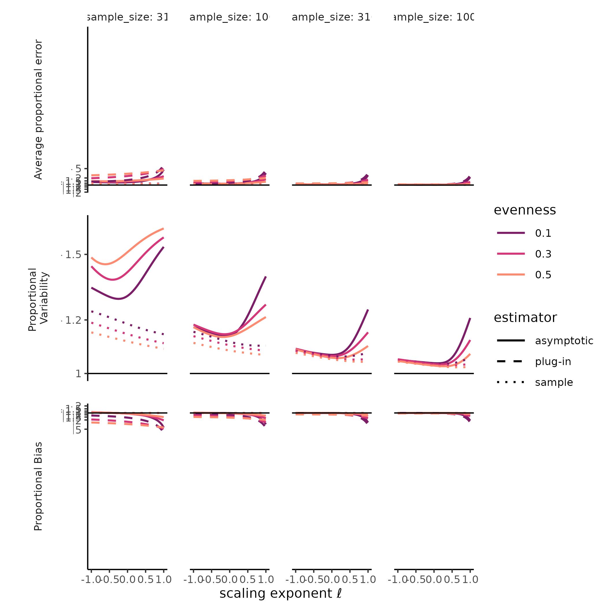

MeanRarity: An R package to facilitate estimation and visualization of Hill diversity
Using_MeanRarity.RmdABSTRACT
Ecologists must choose between diversity metrics that differ in interpretation, as well as numerical and statistical properties, to detect, describe, and predict biodiversity change. Hill diversities, a family that unites popular metrics, including Richness, Shannon’s entropy, and Simpson’s concentration, with a single equation, simplify this choice. The scaling parameter accommodates disparate diversity concepts by placing greater emphasis on common or rare types, and the resulting diversities use a common currency, the “effective” number of types . Even with this elegant unification, users must select values for the Hill diversity scaling parameter, and interpret the ecological significance of the resulting diversity. Concrete metaphors for the Hill diversity scaling, as well as guidance about the numerical and statistical properties of Hill diversity estimates, could facilitate that selection.
We present the
Rpackage MeanRarity, which enables estimating and visualizing Hill diversity (aka “Hill numbers”) in terms of the average species rarity, i.e the reciprocal of relative abundance. With MeanRarity, users can compute mean rarity, generate plots to visualize species abundance distributions and their average rarity, and simulate abundance distributions with known diversity. To illustrate the use of MeanRarity, we simulate species abundance distributions that vary in shape but not richness, and estimate assemblage diversity based on random samples from these distributions. We investigate how the bias and variability of Hill diversity estimates depend on the Hill diversity scaling parameter, features of the abundance distribution such as evenness, and sampling intensity.Our simulations reveal that Hill-Simpson diversity can be highly variable. Furthermore, the asymptotic estimator for Hill-Simpson diversity exhibited greater bias at low sample sizes than the asymptotic estimator for Hill diversities with intermediate scaling parameter values (including Hill-Shannon diversity). As previously reported, however, the bias is negligible for the asymptotic estimates for all Hill diversities with a scaling parameter less than about 0.25, once samples sizes were relatively large, for all species abundance distributions tested.
MeanRarity provides tools to students, researchers, and biostatisticians to understand and investigate Hill diversity metrics. Fixing diversity values, a priori, in simulated species abundance distributions enables replicable, targeted testing of numerical and statistical properties of Hill diversities and their estimators. Our simulations reveal that for both sample Hill diversities and asymptotic Hill diversity estimates, lower bias and variability may be possible for Hill diversities between Hill-Simpson diversity and richness for small, incomplete samples.
KEY WORDS
Hill numbers; biodiversity; sampling; species abundance distribution; R package; rarity; evenness; precision
INTRODUCTION
Biodiversity underpins human existence and drives the character and function of earth’s ecosystems. At the same time, biodiversity is shifting and arguably, declining, at an unprecedented rate due to anthropogenic global change. Yet, detecting and describing this change means choosing just what to measure, and how. Ecologists are faced with a dazzling array of choices.
Increasingly, Hill diversity or “Hill numbers”, a unified family of
diversity measures that includes variants of classical metrics such as
species richness and the Shannon and Simpson indices, have been put
forward as the appropriate metrics for biodiversity quantification (Roswell, Dushoff, and Winfree 2021; Chao et al. 2014;
Jost 2006; Sherwin et al. 2017; Chao and Chiu 2016; Chao, Ricotta, and
Aldo 2019; Chao and Jost 2015). Not only do Hill diversities
unite variants of the most popular diversity metrics with a single
equation 1 , but
they always express diversity on an “effective numbers” scale, which
arguably facilitates comparison and interpretation (Jost 2006; Roswell, Dushoff, and Winfree 2021).
However, despite the conceptual unity of Hill diversities, there is a
wide array of metrics that may be appropriate for a given case, opening
the questions of how to choose among them and to interpret differences
between them. Doing so demands intuition about the numerical,
biological, and statistical properties of these measures, which remain
under-explored. To facilitate such intuition, we developed the
R package MeanRarity, which enables
estimating and visualizing Hill diversity (aka “Hill numbers”) in terms
of the average species “rarity.” Rarity is defined as the reciprocal of
relative abundance.
The average species rarity may be simpler to interpret than a transformed, generalized entropy (i.e., how Hill numbers are typically derived (Jost 2006)). First, ecologists, accustomed to thinking about rarity in the context of diversity, may find it intuitive and useful to interpret Hill diversities as the average species rarity on different scales (Roswell, Dushoff, and Winfree 2021; Patil and Taillie 1982). Second, the rarity parameterization clarifies the role of the scaling exponent, and this R package provides illustration tools to visualize that scaling concretely. Furthermore, this framework may provide an entry point for developing and testing diversity estimators and their related interval estimates (e.g., confidence intervals); this package contains tools to simulate species abundance distributions that should streamline that process.
This R package provides functions for three purposes: (1) computing
Hill diversity as “Mean Rarity”, (2) visualizing and interpreting “Mean
Rarity”, and (3) simulating species abundance distributions with known
diversity. The package is available online on Github (see Data
accessibility). An interactive shiny
application for building “balance plots” is also available online (https://mean-rarity.shinyapps.io/rshiny_app1/). In this
manuscript, we describe the core functions in the package, demonstrate
their application in a small study of bias and sampling variation in
Hill diversity estimates, and contrast MeanRarity with
several R packages that provide similar and/ or
complementary functionality.
PACKAGE DESCRIPTION
Computing Mean Rarity
rarity() computes Hill diversity of a sample,
parameterized in terms of the mean rarity.
We define Hill diversity \(D\) as the mean species rarity in the assemblage
\[D=\left( \sum_{i=1}^{S}p_{i}(r_{i})^{\ell} \right)^{1/\ell} \tag{1}\]
where \(D\) is diversity or mean rarity, \(p_{i}\) is the relative abundance of species \(i\), \(r_{i}\) is the rarity of species \(i\) (defined as the reciprocal of \(p_{i}\)), \(S\) is the total species richness, and \(\ell\) is the scaling exponent that determines the type of mean computed (Roswell, Dushoff, and Winfree 2021).
Hill diversity is more commonly written as
\[D=\left( \sum_{i=1}^{S}p_{i}^{q} \right)^{1/1-q} \tag{2}\] When \(\ell = 0\) (\(q = 1\)), these equations are defined by their limit.
Equations 1 and 2 are equivalent when \(\ell = 1-q\). Re-parameterizing Hill diversity in terms of species rarity can provide conceptual clarity. Equation 1 is a weighted mean rarity, where the weights (relative abundances, \(p_i\)) are factored out explicitly. Simplifying (as in Equation 2) hides the weighting by relative abundance, and leads to the claim that the scaling exponent is the “weight.” The concrete meaning of “weight” when applied to \(q\) in Equation 2 may be difficult to understand.
Because Equations 1 and 2 are algebraically equivalent,
rarity(x, l) is equivalent to
vegan::renyi(x, scale = 1-l, hill = TRUE),
entropart::Diversity(x, 1-l, Correction = "None")), or the
qD output from iNEXT::estimateD(x) where
order = 1-l.
# for a totally even distribution, Hill diversity is the same regardless of `l`
even_comm <- rep(2, 6)
rarity(even_comm, 1) # richness
#> [1] 6
rarity(even_comm, -1) # Hill-Simpson
#> [1] 6
all.equal(rarity(even_comm, 0), rarity(even_comm, 0.34), rarity(even_comm, 1))
#> [1] TRUE
# for uneven communities, Hill diversity depends on `l`
uneven_comm <- c(20, 8, 5, 4, 2, 1)
l_vals <- c(1, 0, -1, 0.34)
data.frame(l = l_vals
, Hill = sapply(l_vals, function(l){
rarity(uneven_comm, l)})
)
#> l Hill
#> 1 1.00 6.000000
#> 2 0.00 4.057871
#> 3 -1.00 3.137255
#> 4 0.34 4.574320Interpreting Mean Rarity
One way of interpreting Hill diversities is that they express the diversity of an assemblage in terms of an imaginary assemblage with that same diversity, but in which all species are equally abundant (Jost 2006). The parameter \(\ell\), along with the distribution of abundances, determines where the equivalency lies (that is, what is the “effective number of species” for that assemblage). The MeanRarity package is designed to clarify what the choice of \(\ell\) reflects. Here, we explore how the choice of \(\ell\) creates different equivalencies.
It may be perplexing to claim that a single assemblage, say, the
uneven assemblage uneven_comm, is simultaneously as diverse
as an assemblage of six (richness, l = 1), four
(Hill-Shannon diversity, l = 0), or three (Hill-Simpson
diversity, l = -1) species. Furthermore, when
l = 1, this assemblage is as diverse (or as species-rich)
as any assemblage with six species. At the same time, when
l = -1, it is about as diverse as an assemblage with twice
the number of species and tremendous unevenness, or half the number of
species and perfect evenness:
uneven_12 <- c(493, 186, 101, 63, 41, 28, 19, 13, 9, 5, 3, 1)
even_3 <- c(20, 20, 20)
rarity(uneven_comm, -1) %>% round(2)
#> [1] 3.14
rarity(uneven_12, -1) %>% round(2)
#> [1] 3.14
rarity(even_3, -1) %>% round(2)
#> [1] 3Many authors have described \(\ell\)
as a factor that weights species’ relative abundances - presumably
suggesting that downweighting rare species means a lower effective
diversity, while upweighting them means a higher effective diversity
(e.g., Chao et al. 2014; Haegeman et al. 2013;
Tuomisto 2010; Cao and Hawkins 2019). Another interpretation
(developed in this package) is that \(\ell\) rescales species
rarities. This interpretation lends itself to concrete
visualizations of Hill diversities as mean rarities, provided by
rarity_plot().
rarity_plot() makes “balance plots,” introduced below,
to visualize mean rarity. The idea behind a balance plot is that means
measure the [weighted] center, or a balance point, for a set of values.
If one imagines a plank with many weights on it, where the balance point
lies depends not only on the size of the weights weights, but also on
their relative locations… the farther towards the ends of the plank a
weight lies, the more leverage it has. When describing diversity, there
are simple rules for the species weights ([relative] abundances) and
where they lie (their scaled rarities). The rarity scaling is
given by the exponent \(\ell\) from
equation 1, passed to the argument l. Here, we create three
balance plots for the three Pythagorean means, given when \(\ell \in \{1, 0,-1\}\):
rich_bal <- rarity_plot(ab = uneven_comm, l = 1, base_size = 12) +
ggplot2::labs(x = "") +
seesaw_sugar("richness", l = 1)
#> [1] "diversity = 6" "community size = 40"
#> [3] "max observed rarity = 40" "min observed rarity = 2"
shan_bal <- white_y( # hide y axis
rarity_plot(ab = uneven_comm
, l = 0
, base_size = 12) +
seesaw_sugar("Hill-Shannon diversity", l = 0)
)
#> [1] "diversity = 4.05787109319726" "community size = 40"
#> [3] "max observed rarity = 40" "min observed rarity = 2"
simp_bal <- white_y(
rarity_plot(ab = uneven_comm
, l = -1
, base_size = 12) +
ggplot2::labs(x = "") +
seesaw_sugar("Hill-Simpson diversity", l = -1)
)
#> [1] "diversity = 3.13725490196078" "community size = 40"
#> [3] "max observed rarity = 40" "min observed rarity = 2"In a balance plot, the species integer abundances are plotted on the
y-axis, species rarities on the x-axis (values are back-transformed, but
scaling is dictated by l), the mean is shown with a
triangular “fulcrum,” and reference points are illustrated for the three
Pythagorean means (i.e., arithmetic, geometric, and harmonic, given when
l = c(1, 0, -1), and equal to richness, Hill-Shannon
diversity, and Hill-Simpson diversity in purple, red, and green
respectively). By default, each
individual is plotted as a “block”, and species with the same rarity are
stacked vertically.
As the value of the scaling exponent, l, increases,
large rarity values are compressed together, while small rarity values
are spread apart. A series of balance plots of the same abundances, but
with different l values, shows this spreading and
compression precisely. Meanwhile, the weights of each species are
determined wholly by their abundances (visualized as a stack of blocks).
Balance plots illustrate that even though the weights do not change with
the scaling exponent, the balance point (or fulcrum) shifts with
rescaling. In the first of the three plots below, the balance point sits
at the arithmetic mean (richness) at 6 (purple point). In the second,
the smaller rarities are shifted apart, while the larger rarity are
shifted together. The balance point shifts leftwards to the geometric
mean (Hill-Shannon diversity), at about 4.1 (red point). In the third,
the balance point shifts farther left still, to the harmonic mean
(Hill-Simpson diversity), at about 3.1 (green point).
rich_bal +
shan_bal +
simp_bal +
plot_layout(widths = ggplot2::unit(rep(2, 3), rep("in",3))
, heights = ggplot2::unit(rep(2, 3), rep("in",3))
)Rather than adjust abundances and scaling parameters in code, users may experiment with balance plots using the R shiny web application that accompanies this package.
Traditionally, Hill numbers in ecology have considered scaling parameters of \(\ell \leq 1\) i.e., \(q \geq 0\). However, scaling parameter values outside this range may produce useful ecological metrics as well (Roswell, Harrison, and Genung 2023). Just as sample richness reflects density, total richness, and the distribution of relative abundances, sample Hill diversities with \(\ell > 1\) (\(q<0\)) reflect multiple community aspects and may be preferable to sample richness as an ad-hoc index of community size and complexity (Roswell, Harrison, and Genung 2023). One advantage of the \(\ell\)-formulation is that it makes transparent that although properties of the weighted mean shift around \(\ell = 1\) (increasing with observed evenness for \(\ell <1\), decreasing with evenness for \(\ell >1\)), species richness need not be the ultimate stopping point for emphasis on rare species.
Simulating communities with known diversity
Assessing the the performance of diversity estimators with real-world data is difficult, because ecological communities are not typically fully censused, and therefore the true diversity of sampled communities is not known. MeanRarity includes a tool to simulate species abundance distributions where diversity values are given as parameters. This way, diversity (in this case, richness and Hill-Simpson diversity) are known and fixed, rather than epiphenomena that fall out of the simulations. In order to achieve this, we simulate species abundance distributions with known, finite, true diversity, but infinite abundance, from which finite samples may be taken. The diversity of a given sample from such a species abundance distribution is therefore not precisely pre-determined.
This approach differs from species abundance distribution simulations implemented in other R packages. For example, mobsim (May et al. 2018) and sads (Prado, Miranda, and Chalom 2022) allow users to specify continuous parametric probability distributions, but then take finite, discrete samples from those distributions in the simulation (in mobsim these can even be spatially explicit!). Users input canonical parameters of the probability distributions and the number of individuals to sample. These are powerful simulation tools, but one drawback common among them is that the simulated diversity resulting from any given set of parameter values is variable.
fit_SAD(), by contrast, does not simulate individuals
explicitly. Instead, it always outputs precisely the same relative
abundances for a given set of parameters. By generating relative
abundances that do not depend on any kind of sampling scenario,
fit_SAD() makes it easy to consistently distinguish the
true, assemblage-level diversity from diversity estimates computed from
samples.
To visualize a realized or simulated species abundance distribution,
MeanRarity includes the convenience function
radplot(), which plots species [relative] abundances
against species ranks.
# set target richness and Hill-Simpson diversity levels
rich <- 20
simpson <- 12
even_SAD <- fit_SAD(rich = rich, simpson = simpson, distr = "lnorm")
#output is a list with three elements
even_SAD
#> $distribution_info
#> distribution fitted parameter
#> "lnorm" "0.800796499428736"
#>
#> $community_info
#> richness Hill-Shannon Hill-Simpson
#> 20.00000 15.12064 12.00000
#>
#> $rel_abundances
#> [1] 0.179084156 0.118048471 0.093645774 0.078786320 0.068255448 0.060160005
#> [7] 0.053607807 0.048109941 0.043370042 0.039194597 0.035449466 0.032036573
#> [13] 0.028880258 0.025918380 0.023095535 0.020356288 0.017635391 0.014837055
#> [19] 0.011769975 0.007758517
rich <- 20
simpson <- 6
uneven_SAD <- fit_SAD(rich = rich, simpson = simpson, distr = "lnorm")
ev <- radplot(even_SAD$rel_abundances, Whittaker = FALSE) +
# The default behavior is *not* to
# log-transform [relative] abundances (i.e. it does not, by default, generate
# a "Whitaker plot").
ggplot2::labs(y = "relative abundance", title =NULL)+
ggplot2::ylim(c(0, 0.4))
#> Scale for y is already present.
#> Adding another scale for y, which will replace the existing scale.
un <- radplot(uneven_SAD$rel_abundances) +
ggplot2::labs(y = "relative abundance", title =NULL) +
ggplot2::ylim(c(0, 0.4))
#> Scale for y is already present.
#> Adding another scale for y, which will replace the existing scale.For any distribution of relative abundances, one can ask, “what is
the Hill diversity of this distribution?” Yet the answer, of course,
depends on the chosen value of the scaling parameter \(\ell\). For a comprehensive answer, one
might look across values of \(\ell\),
also known as a Hill “diversity profile” (Chao et
al. 2014). MeanRarity provides a function to
generate a [sample] Hill diversity profile based on \(\ell\) (rather than \(q\)): divpro().
divpro() does not estimate asymptotic diversity values (as
does, e.g., SpadeR::Diversity()), rather it simply computes
the Hill diversity profile for the [relative] abundances supplied by the
argument ab. As with all MeanRarity
functions, divpro() can work with any real value for the
parameter l (Roswell, Harrison, and
Genung 2023).
# the even and uneven communities have same richness but different Hill
# diversity when `ell != 1`
proPlot <- function(ab){
ggplot2::ggplot(divpro(ab)
, ggplot2::aes(ell, d)) +
ggplot2::geom_line() +
ggplot2::ylim(0,22) +
ggplot2::labs(x = "scaling exponent \'l\'", y = "Hill diversity")
}
ev_prof <- proPlot(even_SAD$rel_abundances)
un_prof <- proPlot(uneven_SAD$rel_abundances)fit_SAD() generates an ideal species abundance
distribution, with relative abundances for an assemblage with infinite
abundance. In the MeanRarity package, to take a finite
sample from an ideal species abundance distribution, we use
sample_infinite() (so named because it samples an infinite
SAD; sample_finite() is for sub-sampling from a realized
assemblage/finite sample).
# diversity of a small sample unlikely to match the simulated diversity values
# first, sample from our simulated SADs
even_sample <- sample_infinite(even_SAD$rel_abundances, 50)
uneven_sample <- sample_infinite(uneven_SAD$rel_abundances, 50)
# `sample_infinite()` returns a numeric vector of sample species abundances
even_sample
#> [1] 11 4 4 5 2 3 1 2 1 1 5 4 2 2 0 0 0 2 1 0
uneven_sample
#> [1] 12 8 10 2 0 3 3 1 3 2 1 1 0 1 2 0 0 1 0 0
# we can compare evenness (given a scaling parameter `l`)
# the evenness is the normalized ratio of the specified Hill diversity to
# richness
e3Fun(even_sample, -1)
#> [1] 0.594709
e3Fun(uneven_sample, -1)
#> [1] 0.4694056
# compare diversity from sample vs. ideal SAD:
# likely pretty far off for a small sample!
# with an even SAD, all diversities lower
even_SAD$community_info
#> richness Hill-Shannon Hill-Simpson
#> 20.00000 15.12064 12.00000
rbind(lapply(c(1, 0, -1), function(l){
rarity(even_sample, l)
})) %>%
`colnames<-`(c("richness", "Hill-Shannon", "Hill-Simpson"))
#> richness Hill-Shannon Hill-Simpson
#> [1,] 16 12.49516 9.920635
# with an uneven SAD, sample Hill-Simpson can be higher than true Hill-Simpson
# richness is always lower
uneven_SAD$community_info
#> richness Hill-Shannon Hill-Simpson
#> 20.000000 9.370171 6.000000
rbind(lapply(c(1, 0, -1), function(l){
rarity(uneven_sample, l)
})) %>%
`colnames<-`(c("richness", "Hill-Shannon", "Hill-Simpson"))
#> richness Hill-Shannon Hill-Simpson
#> [1,] 14 9.407337 7.102273
big_even_sample <- sample_infinite(even_SAD$rel_abundances, 1e7)
big_uneven_sample <- sample_infinite(uneven_SAD$rel_abundances, 1e7)
# with a big enough sample, simulated diversities nearly recovered
even_SAD$community_info
#> richness Hill-Shannon Hill-Simpson
#> 20.00000 15.12064 12.00000
rbind(lapply(c(1, 0, -1), function(l){
rarity(big_even_sample, l)
})) %>%
`colnames<-`(c("richness", "Hill-Shannon", "Hill-Simpson"))
#> richness Hill-Shannon Hill-Simpson
#> [1,] 20 15.11834 11.99503
uneven_SAD$community_info
#> richness Hill-Shannon Hill-Simpson
#> 20.000000 9.370171 6.000000
rbind(lapply(c(1, 0, -1), function(l){
rarity(big_uneven_sample, l)
})) %>%
`colnames<-`(c("richness", "Hill-Shannon", "Hill-Simpson"))
#> richness Hill-Shannon Hill-Simpson
#> [1,] 20 9.365799 5.996038EXAMPLE APPLICATIONS
Drivers of sampling uncertainty in Hill diversity estimates
Accurate estimates of Hill diversity based on sample data are notoriously challenging (Roswell, Dushoff, and Winfree 2021). Although many estimators have been used, the three most common approaches are to a) calculate the diversity of samples directly, treating this as a sample-size-dependent diversity measure (i.e. “sample diversity”) (CITE SMITH AND GRASSLE), b) calculate the diversity of the sample directly, but treat this as an estimate of the diversity of the entire assemblage (sometimes called the “plug-in estimator”) (CITE SOMEBODY), or c) use non-parametric estimators of the diversity of the entire assemblage, or an “asymptotic estimator” (Chao and Jost 2015). All three approaches may have merit for comparing communities and ecosystems (Gooriah et al. 2021) . While the degree to which sample diversity and asymptotic estimates each differ from the true diversity of the full assemblage (bias) has received substantial study, the sampling variation in each type of Hill diversity estimate is less understood, as are potential differences in this variation between sample diversities and their asymptotic estimators. MeanRarity provides a toolkit to explore accuracy and sampling uncertainty for Hill diversity estimates. Because this package simulates species abundance distributions with known diversity, it allows examination of the drivers of sampling variation in Hill diversity estimates.
It is well known that the diversity of a sample tends to be lower than the diversity of the assemblage from which the sample was drawn (Chao and Jost 2015). This “bias” (i.e., when sample diversity is used as a “plug-in” estimator for the true, assemblage-level diversity, rather than as its own index Smith and Grassle (1977)) is most acute for species richness, but can be substantial for all Hill diversities. The degree of mismatch between the sample and true diversity is difficult to know with real assemblages, but this can be addressed directly through simulation. At the same time, current asymptotic Hill diversity estimators (Chao and Jost 2015) typically exhibit little bias when sample sizes are reasonably large (hundreds of individuals) and \(\ell \lesssim 0.25\). Less well-understood is how different features of the species abundance distribution (e.g. evenness, or just how rare the rarest species are) drive the degree of difference between either sampled diversity or asymptotic estimators, and the true diversity of the sampled species abundance distribution.
Similarly, the sampling variation in Hill diversity estimates (both sample diversity/the naïve estimator, and asymptotic estimators) is poorly understood. Intuitively, sampling variability in Hill diversity estimates must depend jointly on sample size, the species abundance distribution, and the scaling exponent for Hill diversity. However, users of Hill diversity currently lack guidance on the relationship between their metric choice and the sampling variability they might expect. Variability, along with bias, is an important consideration when selecting a diversity metric. Especially when the number of replicates is modest, as is often the case in ecological studies, inaccuracy due to random sampling variability could lead to equally misleading results as could bias (Gelman and Carlin 2014).
To explore how the shape of the species abundance distribution and
sample size drive the sampling expectations for sample and asymptotic
Hill diversity estimates, we can first simulate species abundance
distributions using the function MeanRarity::fitSAD().
Here, we generated six distributions: for three levels of evenness, we
simulated both a lognormally- and gamma-distributed assemblage of 100
species. To parameterize evenness, we used (Hill-Simpson diversity
-1)/(richness-1), which is equal to 1 with a perfectly even
species-abundance distribution, and 0 when Hill-Simpson diversity
reaches its minimum, 1, for any richness value (Kvalseth 1991; Chao, Ricotta, and Aldo 2019).
Thus, in each simulated assemblage, we know richness to be 100,
Hill-Simpson takes one of three values given by the evenness parameter,
and other Hill diversities depend on the distributional assumption
(gamma or lognormal).
MeanRarity::fitSAD() returns species relative abundances
(a SAD), and we generate finite, discrete abundance samples with the
function MeanRarity::sample_infinite(). Here, we generated
1000 samples from each simulated SAD of 31, 100, 316, and 1000
individuals. Then, for each sample, we computed Hill diversity profiles
for both the sample and estimated asymptotic Hill diversities. For each
combination of SAD, sample size, and estimate type (i.e., sample,
“naïve,” or asymptotic) we plotted measures of total error, variability,
and bias along the Hill diversity profile from Hill-Simpson diversity to
richness. For total error, we plotted the root mean squared log ratio
between each estimate and the target value (i.e mean sample diversity or
true diversity), hereafter “rmsle.” For bias, we plotted the log ratio
between the Hill diversity estimate and its target, and for variability
we plotted the standard deviation of the log Hill diversity (a unitless
measure of variability). Mean squared log error is the sum of the
squared bias and the variance in the log diversity estimates. We asked,
on a relative scale, how choice of scaling exponent for Hill diversity
affects total error, bias, and sampling variability, and explored the
interactions with evenness, distributional assumption, and sample
size.
The diversity of a sample of fixed size was a stable, accurate measure of rarefied diversity across all the SADs we tested. The total error, greatest for Hill-Simpson diversity, when samples were smaller, and for less even SADs, shrank quickly as sample sizes increased, and was driven entirely by sampling variability, as the sample diversity is a natural unbiased estimator for the expected diversity of a random sample of a given size. Most surprising for us was that the variability for sample diversity was typically highest for Hill-Simpson diversity than for other Hill diversities, until sample sizes got quite large. Although the shape of the SAD (e.g. “lnorm” vs. “gamma”) affected the variability in sample Hill diversity, how it does so appeared to depend on both the Hill scaling exponent and sample size.
The diversity of a sample of fixed size was a stable, but inaccurate measure of true diversity, as has been extensively reported elsewhere (REFS). Although the variability of the naïve estimator is identical to the variability in sample diversity, the bias, i.e. the ratio between sample and true diversity, depends jointly on the choice of Hill scaling exponent, the SAD, and sampling completeness (Roswell, Dushoff, and Winfree 2021).
We found a strong negative bias for species richness for the asymptotic estimator, as well as for the naïve estimator, but when sample diversity is not treated as an estimator for the full assemblage diversity, it has no “bias” (CITE Smith and Grassle, Hurlbert, Dauby & Hardy). Evenness and distributional assumption of the SAD affected the bias for both the naïve and asymptotic Hill diversity estimates. More even communities tended to exhibit lower bias for richness but higher bias for Hill-Simpson diversity, although this pattern depended to some degree on both distributional assumption and sampling intensity. For the asymptotic Hill diversity estimates, bias at very low sample sizes was less than sample diversity but could still be extreme. However, this bias evaporated quickly for both sample and asymptotic Hill diversity estimates when the scaling exponent \(\ell << 1\).
purrr::map(c("lnorm", "gamma", "invgamma"), function(dist){
myp <- err_plot_data %>%
dplyr::mutate(plugin_sdlog = sample_sdlog) %>%
tidyr::pivot_longer(c(5:12, 16)
, names_to = c("est", "err_type")
, names_pattern = "(.*)_(.*)"
, values_to = "this_error"
) %>%
dplyr::mutate(err_type = factor(err_type
, levels = c("rmsle", "sdlog", "bias")
, labels = c("Average proportional error"
, "Proportional \nVariability"
, "Proportional Bias")
)
, est = dplyr::if_else(est == "estimator", "asymptotic"
, dplyr::if_else(est == "naive"
, "plug-in"
, "sample"))
) %>%
# dplyr::mutate(this_error = dplyr::if_else(abs(this_error) > 2
# , sign(this_error) * Inf
# , this_error) # workaround
# # to get big values on plot given geom_line, I think
# , this_error = round(this_error, 11)) %>%
# # and here, to get 0-values to look like 0.
dplyr::filter(distribution == dist #
) %>%
ggplot2::ggplot(ggplot2::aes(x = ell
, color = evenness)) +
ggplot2::geom_line(ggplot2::aes(y = this_error #exp(this_error)
, linetype = est), linewidth = 0.8) +
ggplot2::geom_hline(yintercept = 0) +
ggplot2::theme(strip.background = ggplot2::element_blank()
, strip.placement.y = "outside"
, panel.spacing.x = ggplot2::unit(1.3, "lines")
, panel.spacing.y = ggplot2::unit(1.3, "lines")
, legend.key.width = ggplot2::unit(2, "lines")
) +
ggplot2::scale_x_continuous(limits = c(-1,1)
) +
# ratioScales::scale_y_ratio(slashStar = FALSE, anchor = 1) +
ggplot2::scale_y_continuous(
labels = ratioScales::label_divMult(logscale = TRUE, slashStar = FALSE)
, breaks = log(c(0.2, 0.5, 1/1.5, 1/1.2, 1, 1.2, 1.5, 2, 5))
) +
ggplot2::scale_color_manual(values = hcl.colors(4
, palette = "SunsetDark")[1:3]
) +
ggplot2::scale_linetype_manual(values = c("solid", "dashed", "dotted")) +
ggplot2::facet_grid(err_type~sample_size
, labeller = ggplot2::labeller(
sample_size = ggplot2::label_both
, err_type = ggplot2::label_value
)
, scales = "free_y"
# , space = "free_y"
, switch = "y"
) +
ggplot2::labs(x = "scaling exponent \U2113"
, y = ""
, linetype = "estimator"
) +
ggplot2::geom_hline(yintercept = 0, size = 0.2)
print(myp)
})
#> Warning: Using `size` aesthetic for lines was deprecated in ggplot2 3.4.0.
#> ℹ Please use `linewidth` instead.
#> This warning is displayed once every 8 hours.
#> Call `lifecycle::last_lifecycle_warnings()` to see where this warning was
#> generated.
#> Warning: Removed 180 rows containing missing values (`geom_line()`).
#> Warning: Removed 180 rows containing missing values (`geom_line()`).
#> Warning: Removed 180 rows containing missing values (`geom_line()`).
#> [[1]]
#> Warning: Removed 180 rows containing missing values (`geom_line()`).#>
#> [[2]]
#> Warning: Removed 180 rows containing missing values (`geom_line()`).
#>
#> [[3]]
#> Warning: Removed 180 rows containing missing values (`geom_line()`).
Figure X: Hill-Simpson diversity estimates have high variability under random sampling.
# # Was curious about the parameter space in which the plug-in estimator
# # actually outperforms the Chao and Jost 2015 estimator
# occam <- err_plot_data %>%
# dplyr::group_by(evenness, distribution, ell, sample_size) %>%
# dplyr::summarize(total = estimator_rmsle > naive_rmsle
# , bias = abs(estimator_bias) > abs(naive_bias)
# , variability = estimator_sdlog > sample_sdlog)
#
#
# occam %>%
# dplyr::filter(total %in% c(TRUE, FALSE)) %>%
# ggplot2::ggplot(ggplot2::aes(total, ell
# , color = as.factor(sample_size), shape = distribution ))+
# ggplot2::geom_jitter(height = 0, width = 0.4)+
# ggplot2::scale_color_manual(values = hcl.colors(4, "Plasma")) +
# ggplot2::facet_wrap(~evenness)+
# ggplot2::labs(x = "plug-in estimator beats Chao (rmsle)")+
# ggplot2::ylim(c(-1, 1))
#
#
# occam %>%
# dplyr::filter(bias %in% c(TRUE, FALSE)) %>%
# ggplot2::ggplot(ggplot2::aes(bias, ell, color = as.factor(sample_size), shape = distribution ))+
# ggplot2::geom_jitter(height = 0, width = 0.4)+
# ggplot2::scale_color_manual(values = hcl.colors(4, "Plasma")) +
# ggplot2::facet_wrap(~evenness)+
# ggplot2::labs(x = "plug-in estimator beats Chao (log accuracy ratio)")+
# ggplot2::ylim(c(-1, 1))
#
# occam %>%
# dplyr::filter(variability %in% c(TRUE, FALSE)) %>%
# ggplot2::ggplot(ggplot2::aes(variability, ell
# , color = as.factor(sample_size), shape = distribution ))+
# ggplot2::geom_jitter(height = 0, width = 0.4)+
# ggplot2::scale_color_manual(values = hcl.colors(4, "Plasma")) +
# ggplot2::facet_wrap(~evenness)+
# ggplot2::labs(x = "plug-in estimator beats Chao (sdlog)")+
# ggplot2::ylim(c(-1, 1))Much less explored is the variability of both sample diversity, and of asymptotic diversity estimates, under random sampling expectations. Here, our results were striking, and challenged the orthodoxy that Hill-Simpson diversity is the low-uncertainty option for comparing assemblages (Lande, Devries, and Walla 2000) . The sample Hill-Simpson diversity, which has been promoted as a diversity metric that is robust to variation in sampling intensity (Chase and Knight 2013), exhibited high sampling uncertainty for most SADs and sampling intensities… greater variability than for any other sample Hill diversity. Across Hill diversities, the asymptotic estimator was typically more variable than the sample diversity was. This was especially the case for richness. While the sampling variability in the asymptotic Hill-Simpson diversity was still higher than for the asymptotic Hill-Shannon diversity, as we saw for the sample diversity, as the scaling exponent \(\ell\) approached 1 (i.e. increased emphasis on rare species, closer to richness), the variability was high and declined slowly with additional sampling. Depending on the evenness and distributional assumption of the SAD, the asymptotic richness estimate could be more, or less, variable than the asymptotic Hill-Simpson diversity estimate.
ALTERNATIVE SOFTWARE
Functions to generate similar diversity estimates and assemblage simulations are available in several R packages.
iNEXT The R package iNEXT provides tools for rarefaction and extrapolation of sample Hill diversity estimates, and point estimates for asymptotic estimators for richness, Hill-Shannon, and Hill-Simpson. It computes sample Hill diversity for \(\ell\leq 1 = q \geq 0\). By contrast, the function
MeanRarity::rarity()also computes mean rarity when \(\ell>1\) (Roswell, Harrison, and Genung 2023). Although estimates from iNEXT and MeanRarity should tend to be congruent for \(\ell = 1-q\), MeanRarity provides users with the option to use \(\ell\) throughout, emphasizing the MeanRarity framework developed in Roswell et al. 2021 (Roswell, Dushoff, and Winfree 2021). iNEXT functions are highly integrated, generating multiple outputs and computing bootstrapped variance estimates by default, whereas in MeanRarity most exported functions are comparatively simple. MeanRarity enables parameterizing Hill diversity withqorl, and provides tools for simulating species abundance distributions and visualizing mean rarity, which iNEXT does not, this may make MeanRarity best suited to students and those studying biodiversity estimation. iNEXT is well-suited to plotting empirical diversity data from a small to modest number of assemblages.SpadeR The R package SpadeR provides similar estimates for Hill diversity as iNEXT, also parameterized by \(q\) rather than \(\ell\) (MeanRarity allows either parameterization, defaulting to \(\ell\)).
SpadeR::Diversity, likeMeanRarity::divpro, generates a Hill diversity “profile”. Internal functions fromSpadeRare used as source code in MeanRarity (e.g. a simplified version ofSpadeR:::Chao_Hill_abu()is an exported function in MeanRarity). WhileSpadeRprovides a suite of tools for estimating alpha- and beta-diversity, MeanRarity provides additional tools for simulation, visualization, and alternative parameterization with \(\ell\).vegan
The R package vegan contains a
multitude of tools for comparing community data in R. Like
MeanRarity, vegan contains tools to
estimate Hill diversity (vegan::renyi(..., hill = TRUE)),
rarefy datasets (vegan::specaccum()), and fit parametric
distributions to abundance vectors (vegan::fisherfit()).
While vegan is highly versatile, historical artifacts
may lead to confusion about Hill diversity. For example,
vegan::diversity(x, "invsimpson") == 1/(1-vegan::diversity(x, "simpson")),
although users might reasonably assume that
vegan::diversity(x, "invsimpson") == 1/vegan::diversity(x, "simpson").
MeanRarity focuses on the interpretation of Hill
diversities as average of species rarities across scales, to dispel
confusion.
sads The R package sads provides functions to fit parametric distributions to abundance vectors using maximum-likelihood. The function `
sads::rsad(), likeMeanRarity::fit_SAD(), generates abundance vectors based on parametric distributions for true species abundance distributions. Whilesads::rsad()returns integer-abundance for a simulated sample from a parametric species abundance distribution,MeanRarity::fit_SAD()returns relative abundances for the underlying distribution itself.MeanRarity::fit_SADexpands on the functionality ofsads::rsadby enabling users to parameterize the underlying species abundance distributions by both true richness and true Hill-Simpson diversity, rather than richness alone.mobsim The R package mobsim expands on the simulations provided by sads to generate spatially-explicit simulations. Unlike MeanRarity, mobsim provides tools to simulate and estimate diversity-area relationships. However, in mobsim, the diversity of an assemblage is an outcome of a simulation, rather than an input, whereas
MeanRarity::fit_SAD()allows users to input diversity directly, and sample from a distribution with known diversity withMeanRarity::sample_infinite(). These functionalities enable complementary approaches to studying the behavior of diversity estimates under different sampling scenarios.entropart The
Diversity()function in entropart computes several estimators of Hill diversities (and several relevant monotonic transformations) for any real value ofq = 1-l, and with the optionCorrection = "None"is congruent withMeanRarity::rarity(). entropart uses entropy, rather than mean rarity, as the conceptual starting point, and includes several entropy-focused estimation tools beyond those included in MeanRarity, spadeR, iNEXT, or vegan.EntropyEstimation Zhang and Grabchak 2014 provided novel entropy estimators, and this package implements their estimators across a variety of entropy-based diversity indices. The function
EntropyEstimation::Hill.z()computes the exponentiated estimated Renyi entropy (a.k.a. Hill diversity) for order \(r = 1-l\). For comparison with other Hill diversity estimators, users are referred to entropart.Richness This package is available from Github https://github.com/EWTekwa/Richness and provides the function
RichnessEsts(), which generates point estimates for asymptotic species richness using a variety of methods, including the novel one introduces in Tekwa et al. 2023 PTRSB. This new estimator is not generalized to all Hill diversities, which are the focus of MeanRarity.
CONCLUSIONS
The R package MeanRarity enables a
coherent study of Hill diversity metrics through the framework of
average species rarity. As Hill diversity metrics gain popularity,
MeanRarity provides tools to estimate and visualize
them, and enables continuing research into the properties of these
metrics. MeanRarity also facilitates simulating
assemblages with known diversity, which is not easily done with other
popular software packages for biodiversity science. To illustrate the
use of the package in a research program, we tested how different
distributions of relative abundance in assemblages drives sampling
uncertainty in Hill diversity estimators. We found that Hill-Simpson
diversity and its asymptotic estimator, which have been promoted as
stable, robust measures of biodiversity due to relative emphasis on
common, rather than rare species, exhibit high variability, especially
in the presence of low evenness and very rare species.
DATA ACCESSIBILITY
This article does not use any empirical data. The package is available on Github (SOME KIND OF URL OR DOI REF).